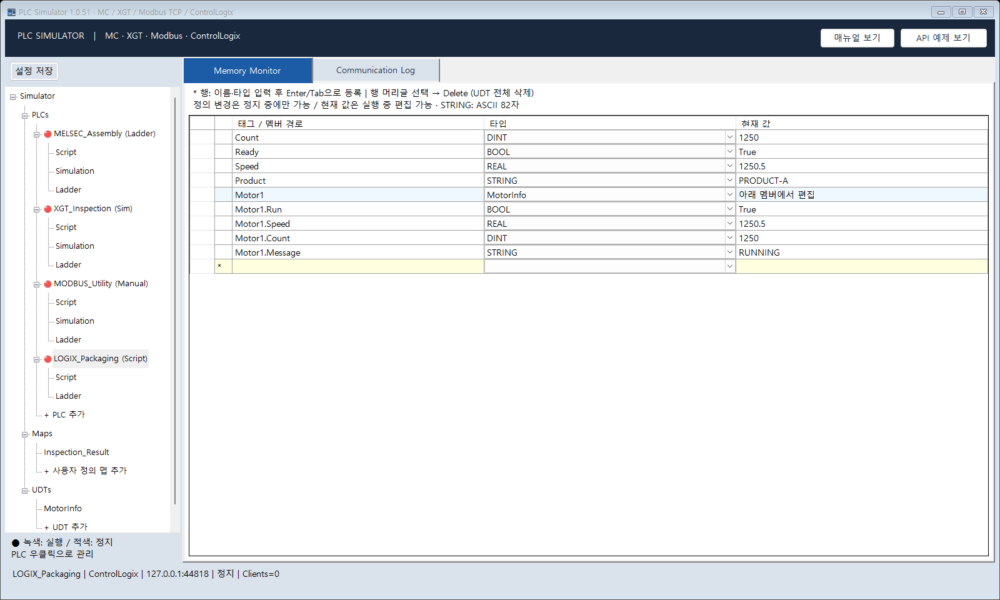
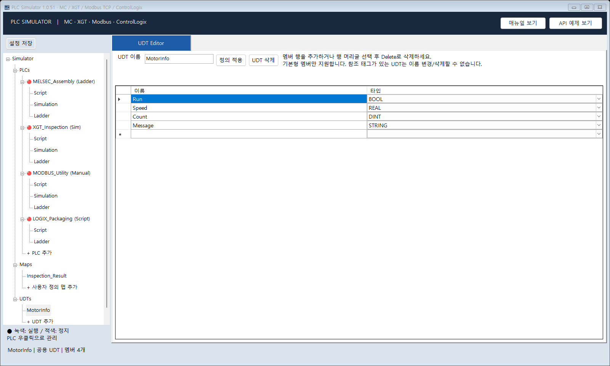
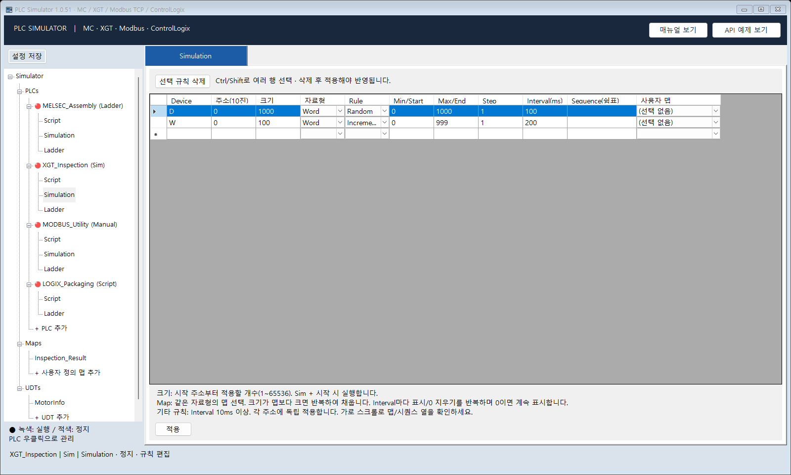
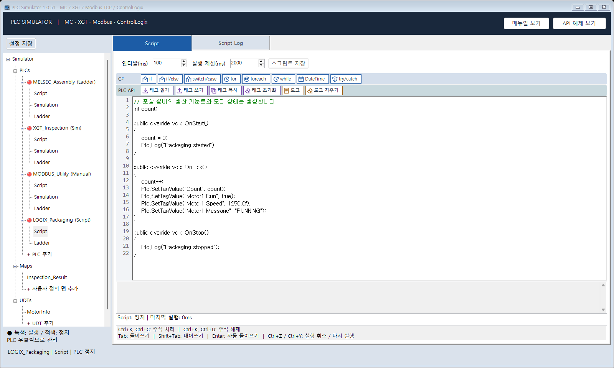
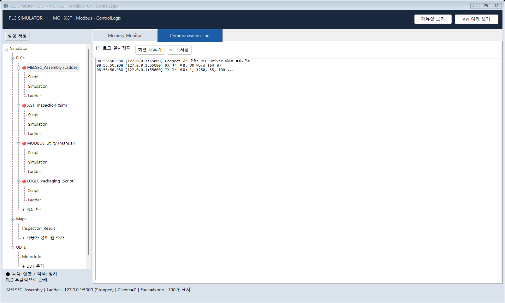
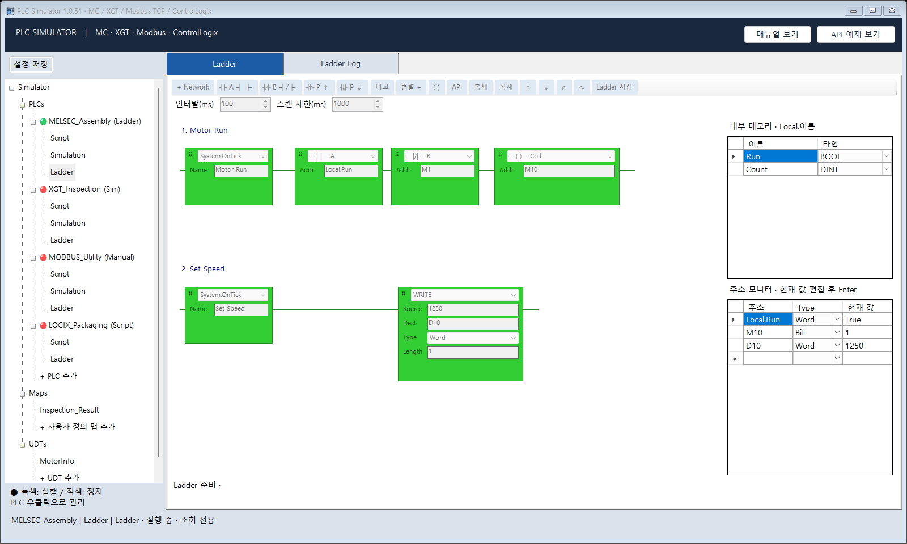

SUPPORTED PROTOCOLS
현장에서 사용하는 PLC 통신.
| PLC | 통신 방식 | 테스트 데이터 |
|---|---|---|
| MELSEC Q | MC 3E Binary / ASCII | D·M·X·Y·W·B·R·ZR |
| LS XGT | XGT Ethernet Binary | I·Q·M·W·D 비트·워드 |
| Modbus TCP | TCP / MBAP | Coil·Discrete Input·Holding / Input Register |
| ControlLogix | EtherNet/IP / CIP | BOOL·INT·DINT·REAL·STRING, 기본형 UDT |
실제 PLC CPU의 모든 명령을 재현하지 않습니다. ControlLogix의 상용 클라이언트별 호환성은 개별 확인이 필요합니다.
PRODUCT TOUR
값을 만들고, 동작을 확인하고.
메모리 모니터
10진수·HEX·ASCII·Binary로 값을 확인하고 테스트 데이터를 편집합니다.

ControlLogix 태그
태그 이름과 자료형을 등록하고 클라이언트의 읽기·쓰기를 확인합니다.

UDT Editor
기본형 멤버로 사용자 정의 태그 구조를 구성합니다.

시뮬레이션 규칙
Random·Increment·Fixed·Sequence·Map으로 반복 테스트 데이터를 만듭니다.

C# 스크립트
OnStart·OnTick·OnStop에서 상황에 맞는 데이터 변화를 작성합니다.

통신 로그
요청과 응답을 확인하며 클라이언트 연동을 점검합니다.
Sim 모드는 MELSEC·XGT·Modbus 등 주소형 PLC에 적용됩니다. ControlLogix는 Manual·Script·Ladder 모드를 제공합니다. 소개 자료는 1.0.51 기준이며, 다운로드 설치본의 제공 범위는 해당 배포 버전에 따릅니다.
Ladder 미리보기 · 개발 브랜치 기능
A/B·펄스 접점과 코일, WRITE 블록으로 테스트 동작을 구성합니다. 소개서에 개발 브랜치 기능으로 표기되어 있으며 제조사 PLC 프로그램과 호환되는 편집기는 아닙니다.
